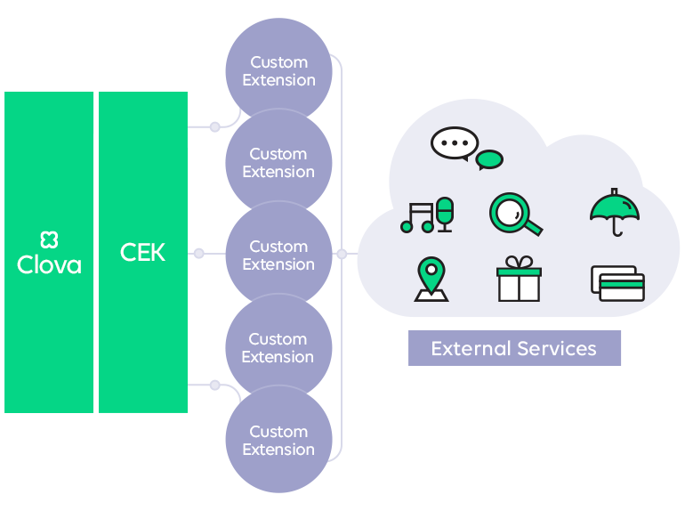

CEK 개요
이 문서는 Clova Extension Kit(이하 CEK)에 대해 자세히 설명합니다. 이 문서를 통해 CEK가 무엇이고 어떻게 동작하는지 파악할 수 있으며, CEK와 관련된 가이드나 레퍼런스를 제공합니다.
CEK란?
Clova extension(이하 extension)은 음악, 쇼핑, 금융 등과 같은 외부 서비스(3rd party service)나 집안의 IoT 기기 제어 등 사용자가 Clova를 통해 다양한 경험을 제공받을 수 있도록 Clova에게 확장된 기능을 제공하는 웹 애플리케이션입니다. CEK는 extension을 개발할 때 필요한 도구와 인터페이스를 제공하는 플랫폼으로 Clova와 extension 사이의 커뮤니케이션을 지원합니다.

CEK는 다음과 같은 기능을 제공합니다.
- Interaction 모델 관리(Clova Developer Console 제공)
- Clova와 extension 간 인터페이스 제공
Note!
현재 Clova Developer Console을 개발하는 중입니다. 따라서, Interaction 모델을 정의하려면 제휴 담당자와 협의하기 바랍니다.
CEK 동작 구조
Clova는 CIC로부터 입력된 사용자의 발화를 인식하며, CEK를 통해 미리 등록된 Interaction 모델을 참조하여 사용자의 발화를 분석합니다. CEK는 분석된 사용자의 발화 정보를 extension에게 전달하며, extension은 사용자 요청에 대한 처리 결과를 응답으로 돌려줘야 합니다. 이때 미리 정의된 메시지 포맷에 맞게 메시지를 주고 받게 됩니다.
다음은 Clova 플랫폼과 extension 사이의 동작 구조를 나타내는 다이어그램입니다.

Extension 종류
Clova 플랫폼은 현재 다음과 같은 두 종류의 extension을 지원 및 제공하고 있습니다.
- Custom extension : 임의의 확장된 기능을 제공하는 extension입니다. Custom extension을 사용하면 음악, 쇼핑, 금융과 같은 외부 서비스의 기능을 제공할 수 있습니다.
- Clova Home extension : IoT 기기 제어 서비스를 제공하기 위한 extension입니다.